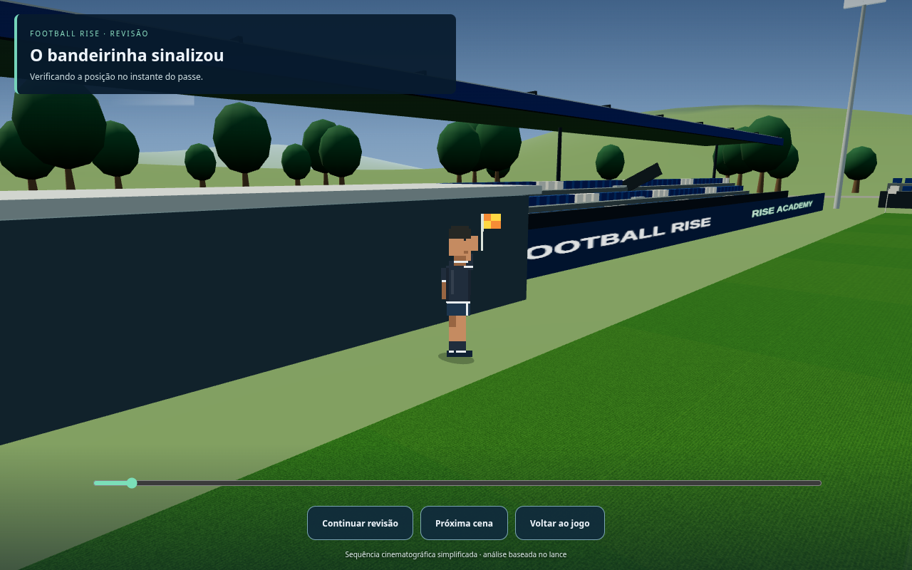
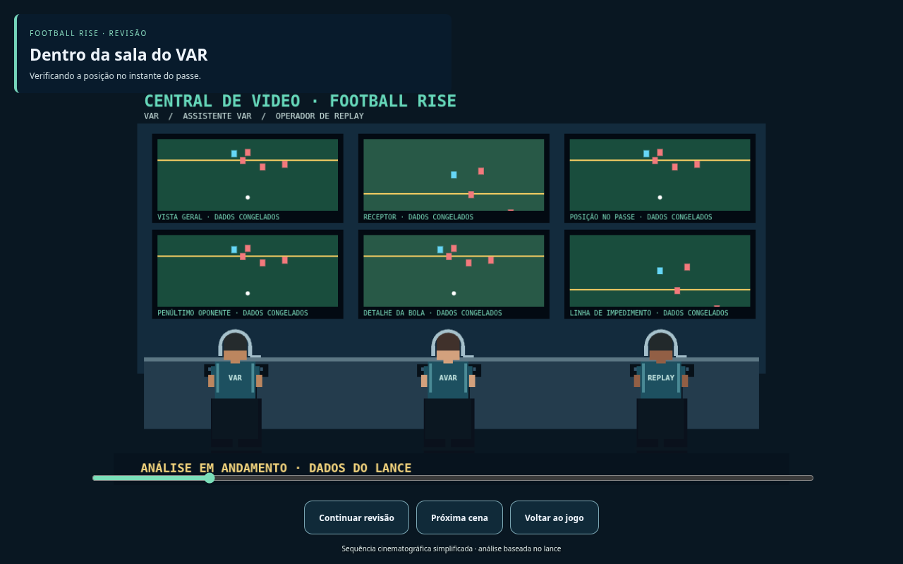
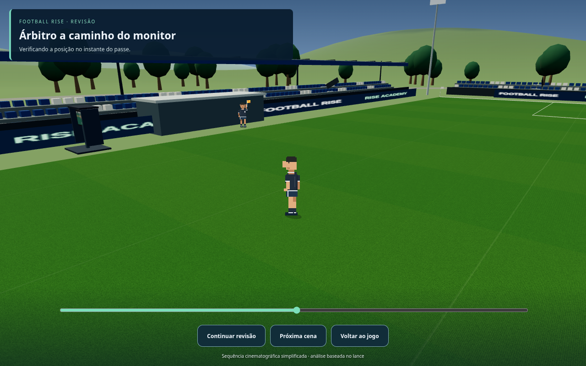
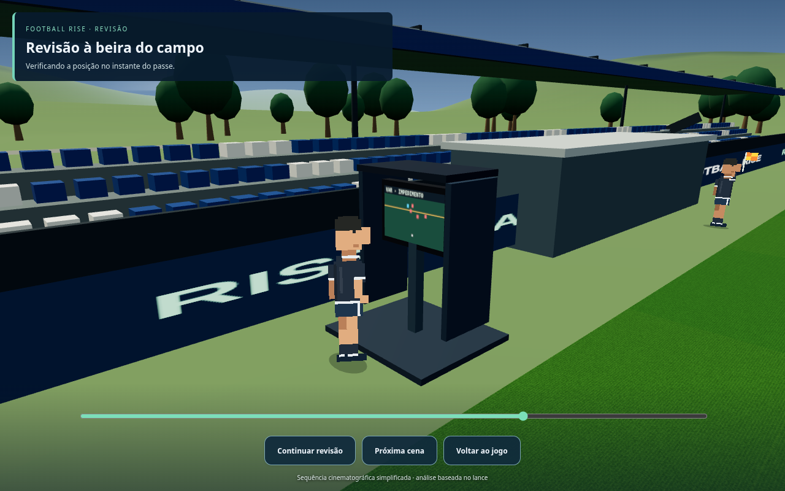
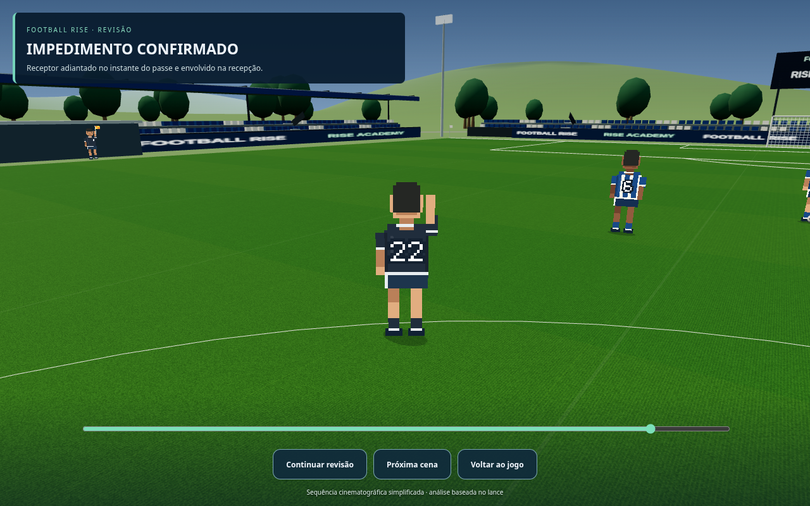
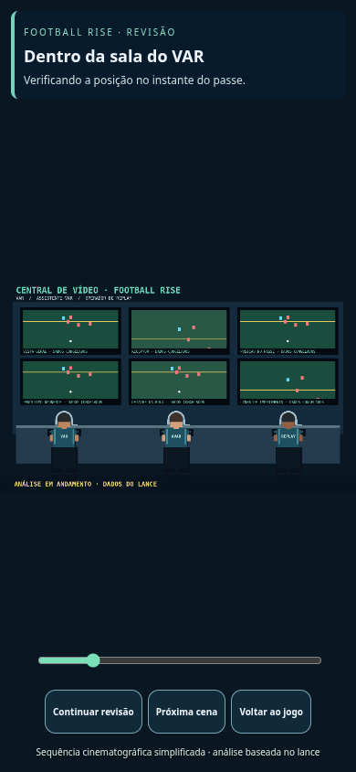

Football Rise — bandeirinhas e VAR
Prévia para aprovação. Jogo público ainda não atualizado. Protocolo cinematográfico simplificado.
Bandeirinha sinalizando um impedimento real da oportunidade

Sala do VAR — três profissionais, headsets e seis telas

Árbitro se deslocando até o monitor

Monitor exibindo os dados do mesmo lance

Árbitro comunica a decisão

Sala do VAR no navegador de celular
